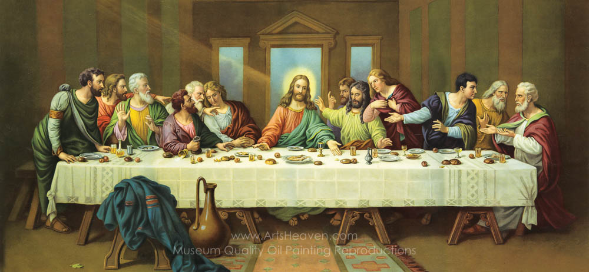
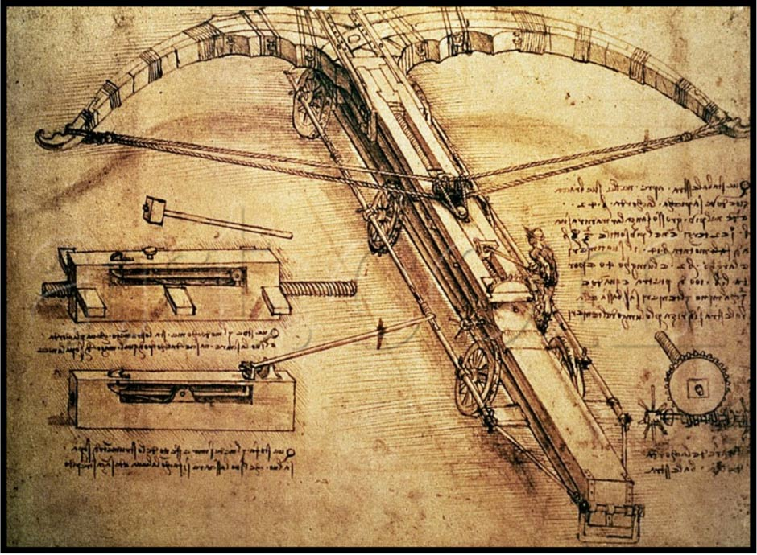
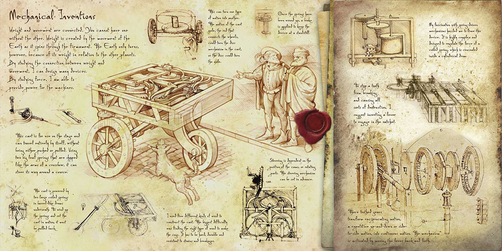
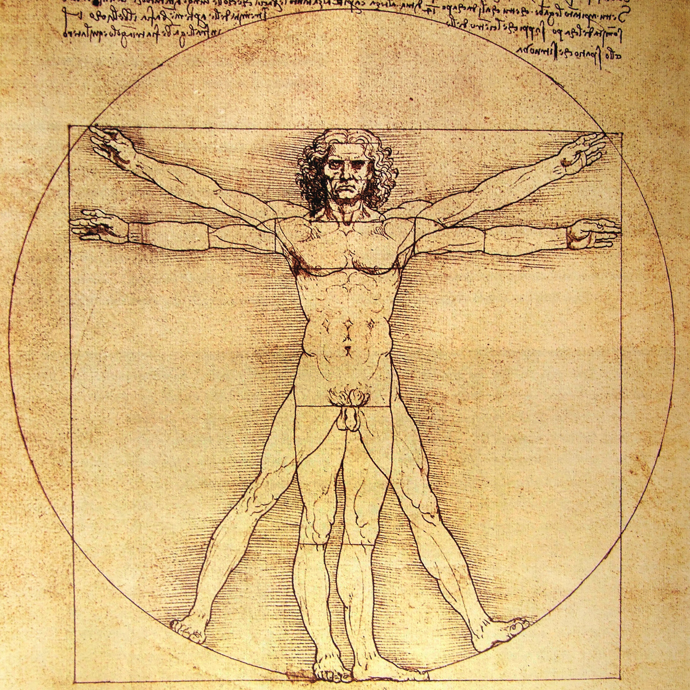
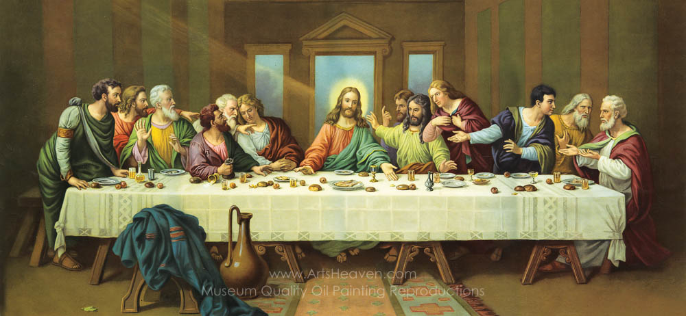
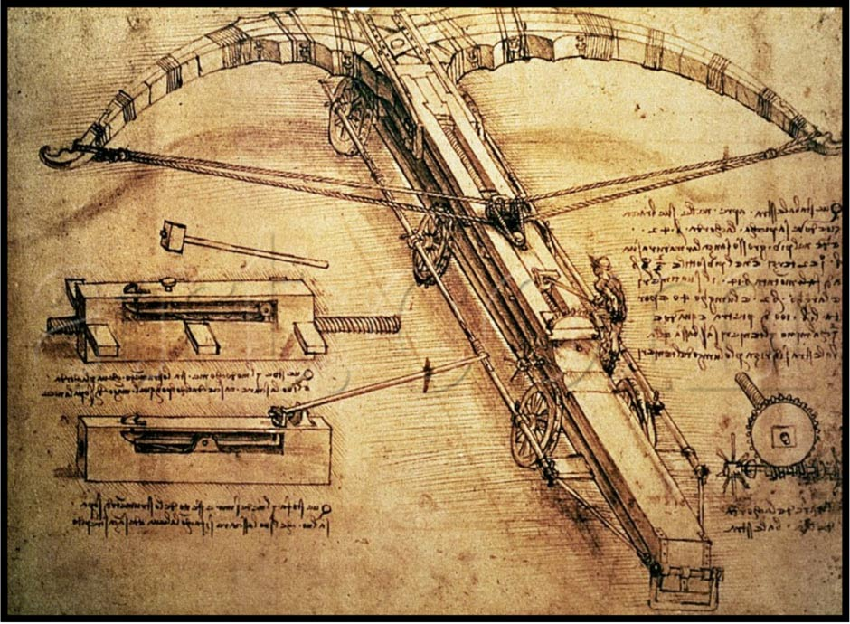
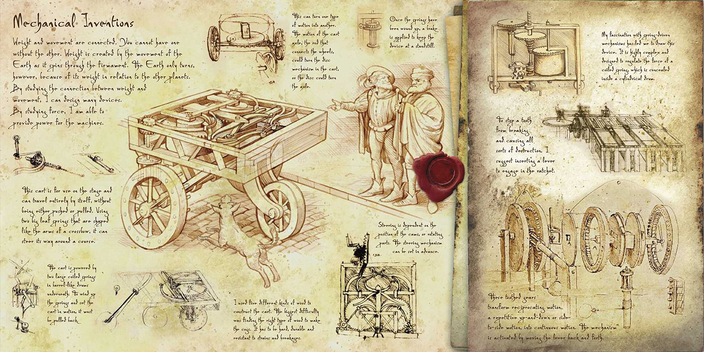
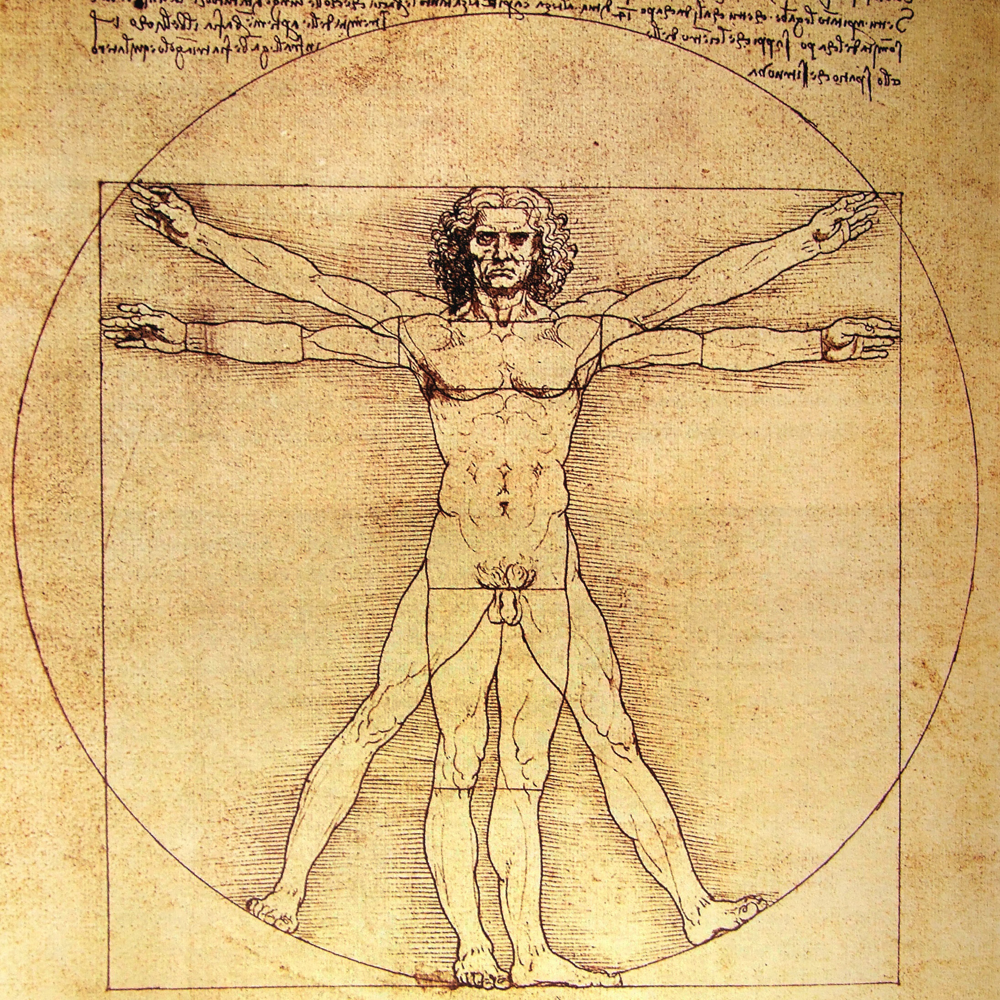

No Mankind Can Replace The Place Of Da Vinci
Leonardo di ser Piero da Vinci, known as Leonardo da Vinci, was an Italian polymath of the Renaissance whose areas of interest included invention, drawing, painting, sculpture, architecture, science, music, mathematics, engineering, literature, anatomy, geology, astronomy, botany, paleontology, and cartography.
A painting by Leonardo da Vinci sold for $450.3 million at Christie's, by far the highest price for any work of art sold at auction—and a sign of the lofty place the great Italian artist holds in our imagination.
Today, the term “genius” is bandied about to describe pop stars, stand-up comedians, and even footballers. But Leonardo da Vinci earned the description, explains Walter Isaacson in his lavishly illustrated new biography. From iconic paintings—“Mona Lisa” and “The Last Supper”—to designs for flying machines and ground-breaking studies on optics and perspective, Leonardo fused science and art to create works that have become part of humanity’s story. [Find out what science tells us about geniuses.]
 






